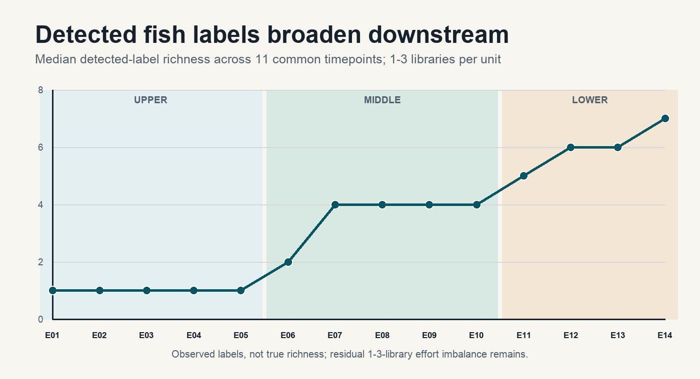
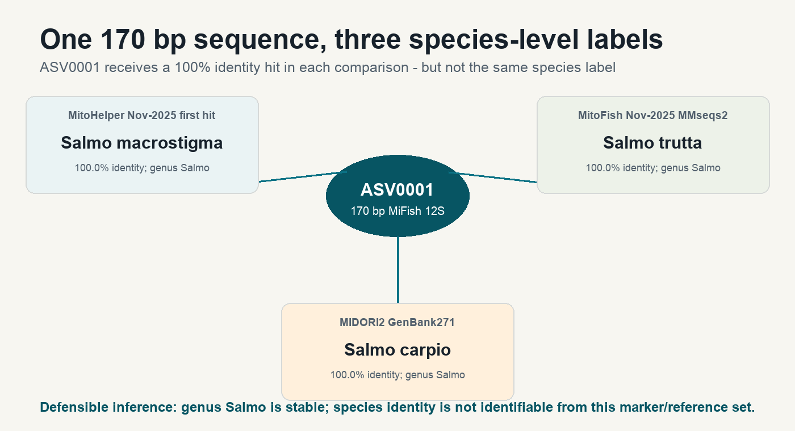
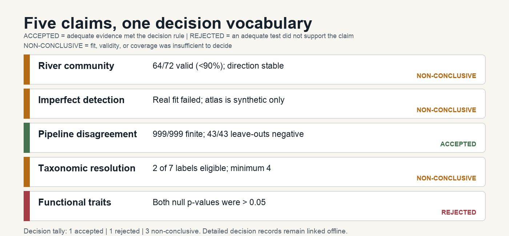

River Conwy fish eDNA reanalysis
More data, less certainty?
Community ecology | recoverability | pipeline disagreement | molecular resolution | functional traits
01 / RIVER
Detected labels broaden downstream

The direction remains positive in all 64 valid multiverse families and 3,600 one-library draws, with 0/75 leave-out reversals. But 64/72 validity misses the full 90% gate; PERMANOVA remains p = 0.0714.
02 / SEQUENCE
Genus is stable; species is not

Three 100%-identity comparisons disagree at species. MiFish, COI and cyt-b each pass a record-level genus boundary, but only 2 of 7 candidate labels are eligible; the species gate requires at least 4.
03 / CLAIMS
Evidence changes the sentence

Accepted: the scoped pipeline association. Rejected: trait broadening beyond fixed margins. Non-conclusive: river robustness, real occupancy correction and longer-marker species resolution, because validity, fit or coverage was insufficient.
Source dataset: Perry et al. (2024), Nature Communications 15:4372. doi:10.1038/s41467-024-48640-3.